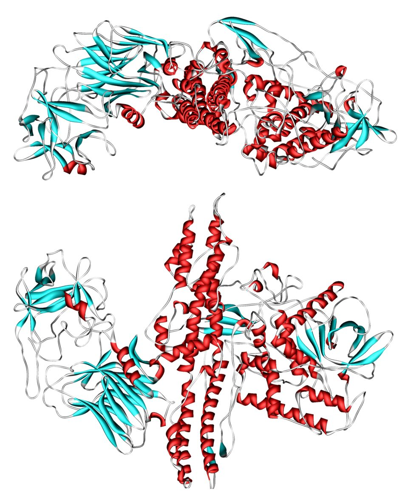

From poison to medicine
Botulinum toxin is the most potent substance known: it is produced by the bacterium Clostridium botulinum and causes botulism, a severe paralysis. But in tiny doses injected into a specific muscle it becomes a very useful medicine. It blocks the release of acetylcholine at the junction between nerve and muscle, so the injected muscle relaxes. It also reduces the release of pain substances and gland secretions.
Its medical use began in the 1970s, when the ophthalmologist Alan Scott used it to correct squint. Today it is a key treatment in neurology, and its cosmetic use is only a small part.
Uses in neurology
| Indication | What it achieves |
|---|---|
| Focal dystonias: cervical, blepharospasm, spasmodic dysphonia, writer's cramp | It is the treatment of choice |
| Hemifacial spasm | Controls contractions on one side of the face |
| Spasticity after stroke, multiple sclerosis, spinal cord injury, cerebral palsy | Relaxes specific muscles and makes hygiene, walking and rehabilitation easier |
| Chronic migraine | Reduces headache days |
| Sialorrhoea (excess saliva) in Parkinson's or ALS | Injection into the salivary glands |
| Neurogenic overactive bladder | Injection into the bladder |
| Head and voice tremor, tics, bruxism, localised neuropathic pain | Uses in selected cases |
| Hyperhidrosis (excessive sweating) | Injection into the skin |
How it is given
- It is injected with a fine needle into the chosen muscles, often guided by ultrasound or electromyography to reach deep muscles accurately.
- The effect starts after 3-7 days, peaks at 2-4 weeks and lasts about 3 months, because the nerve forms new endings.
- It is repeated regularly, generally not sooner than 12 weeks, to reduce the risk of antibodies forming that would make it ineffective.
- In spasticity it works much better when followed by physiotherapy, stretching and splints.
Side effects
They are local and temporary:
- Excessive weakness of the injected muscle or its neighbours: for example, a drooping eyelid after treating blepharospasm, or difficulty swallowing after treating the neck.
- Pain or a small bruise at the injection site.
- Rarely, generalised weakness or flu-like symptoms.
It is not recommended in pregnancy or in diseases of the neuromuscular junction such as myasthenia gravis.
Different preparations
There are several products (onabotulinumtoxinA, abobotulinumtoxinA, incobotulinumtoxinA and others), with doses that are not interchangeable. It should be given by professionals with specific training.
Sources
- Simpson DM, et al. Practice guideline update summary: botulinum neurotoxin for the treatment of blepharospasm, cervical dystonia, adult spasticity, and headache. Neurology. 2016;86:1818-26.
- Jankovic J. Botulinum toxin: state of the art. Mov Disord. 2017;32:1131-8.
- Dodick DW, et al. OnabotulinumtoxinA for treatment of chronic migraine: pooled results (PREEMPT). Headache. 2010;50:921-36.
- Dressler D, et al. Botulinum toxin therapy: a series of clinical practice guidelines. J Neural Transm. 2021;128:321-35.